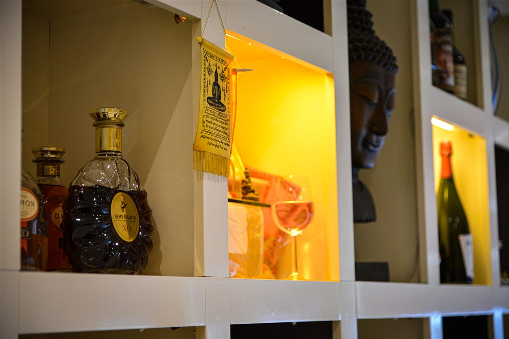
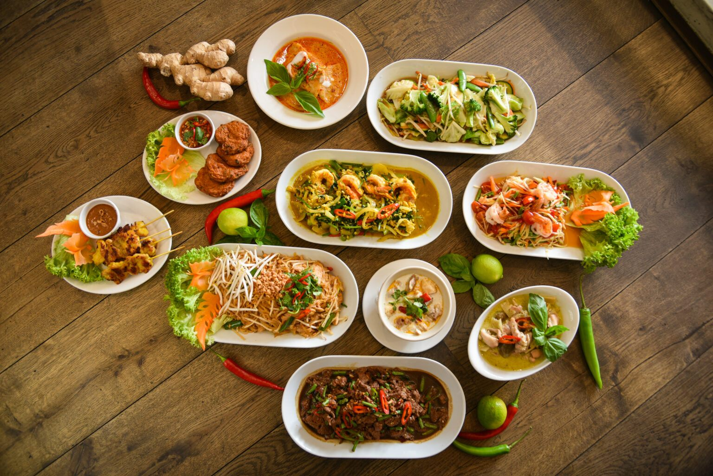
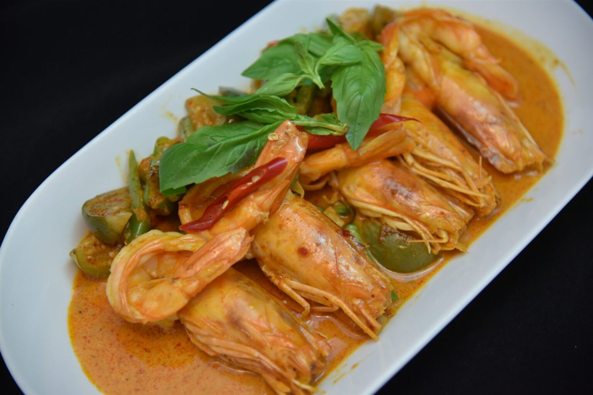
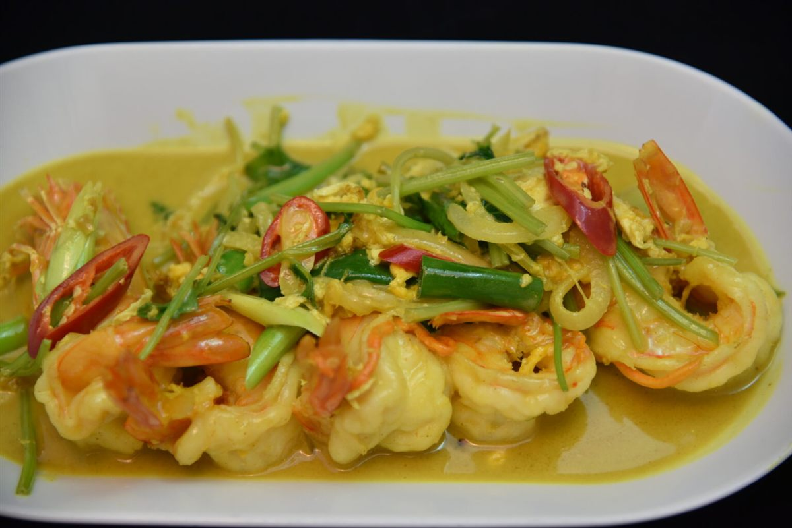
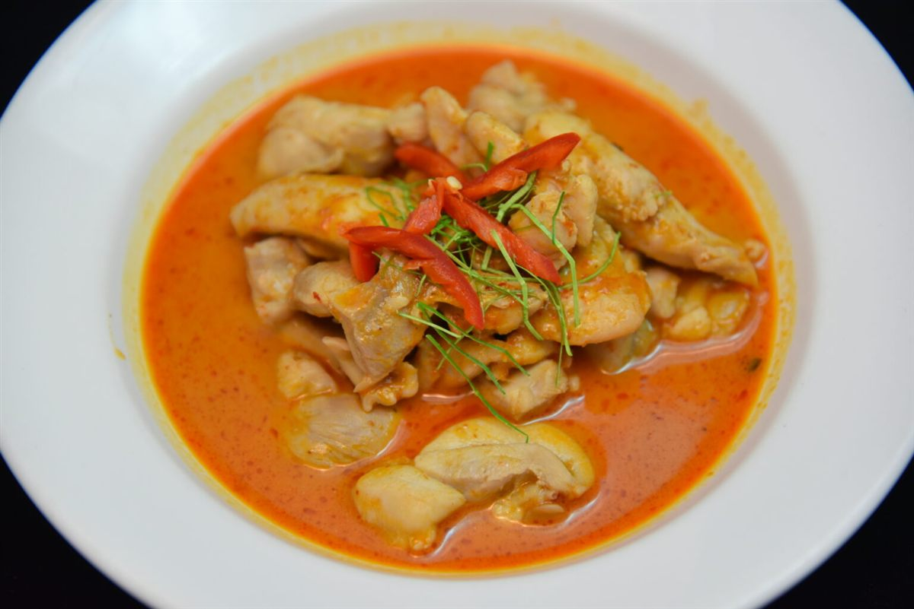
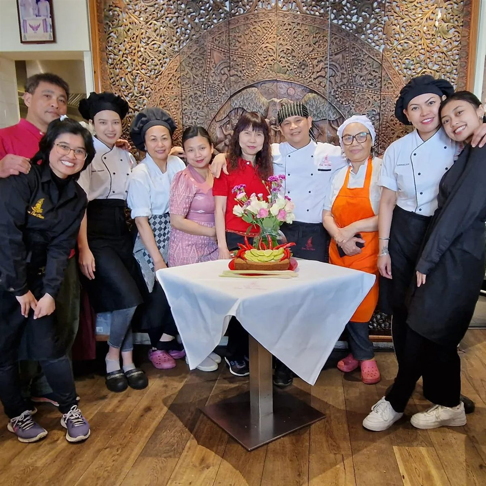
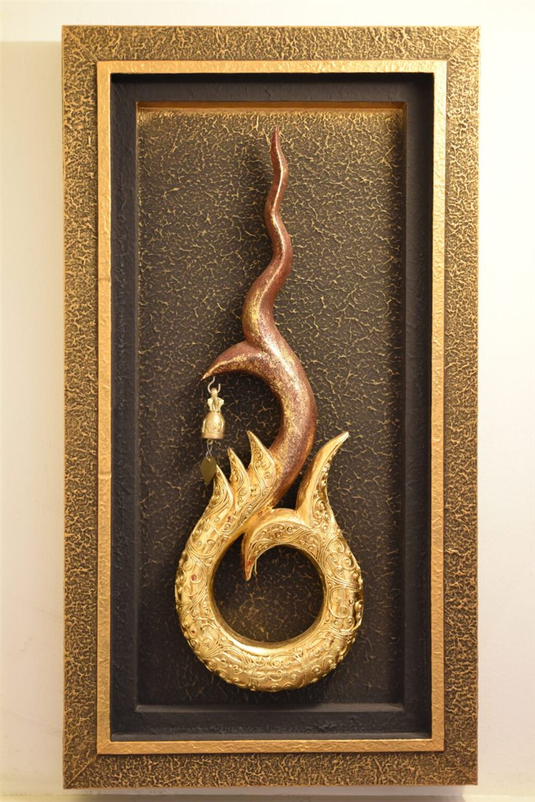

Krua Thai Classic
Authentieke Thaise keuken in het hart van Amsterdam, sinds 1991.
Een familierestaurant met de smaken van toen
Krua Thai Classic is een Thais familierestaurant in Amsterdam, sinds 1991. Het is een van de eerste Thaise restaurants die zich in de stad vestigden.
Wij vinden het belangrijk om trouw te blijven aan onze oorspronkelijke smaken en het eten zo authentiek mogelijk te houden. Met meer dan dertig jaar ervaring in de Thaise keuken en een goed ingespeeld team verwelkomen we graag gasten van over de hele wereld.
- 1991
- open in Amsterdam
- 30+ jaar
- Thaise kookervaring






Ons team
Achter elke schaal staat een vertrouwd team, in de keuken en in de zaal. Een familiebedrijf dat al sinds 1991 gasten uit Amsterdam en van ver daarbuiten aan tafel heeft.

Reserveren
Reserveer online via onze reserveringspagina, of bel het restaurant. U kunt ons telefonisch bereiken tussen 15:00 en 23:00 uur.
Met tien personen of meer?
Voor groepen vanaf tien personen reserveert u per e-mail of via ons groepsnummer.
Contact
- Adres
- Staalstraat 22
Amsterdam - Restaurant
- +31 20 622 9533
bereikbaar van 15:00 tot 23:00 uur - Groepen (10+)
- +31 6 2901 4032
- info@kruathai.nl